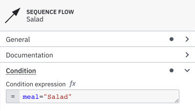
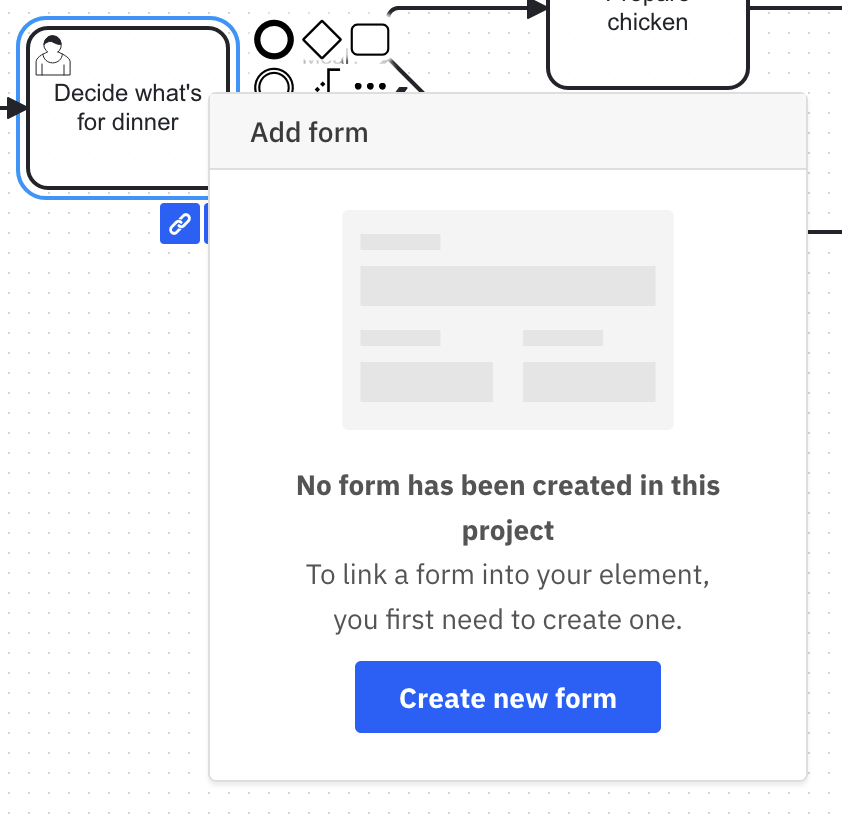
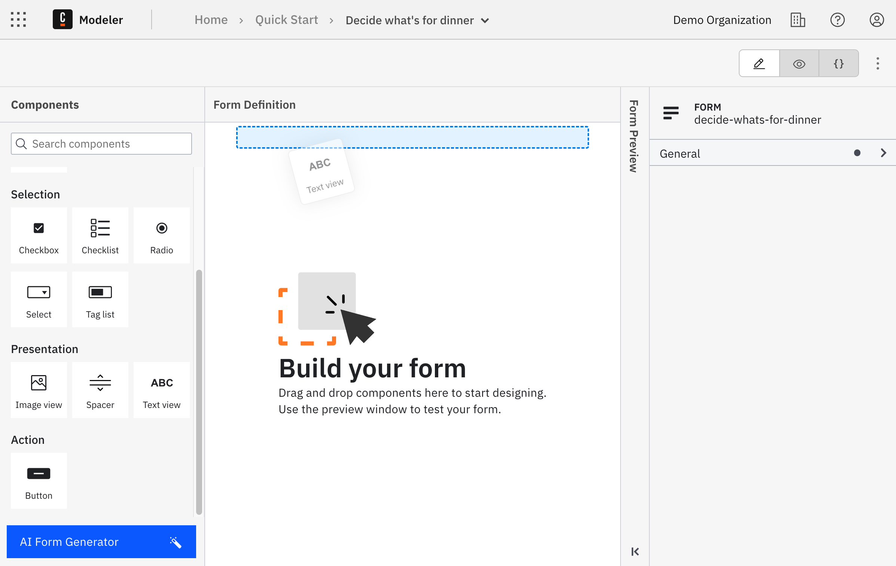
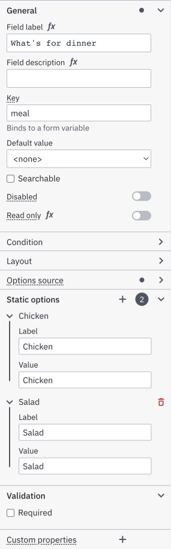
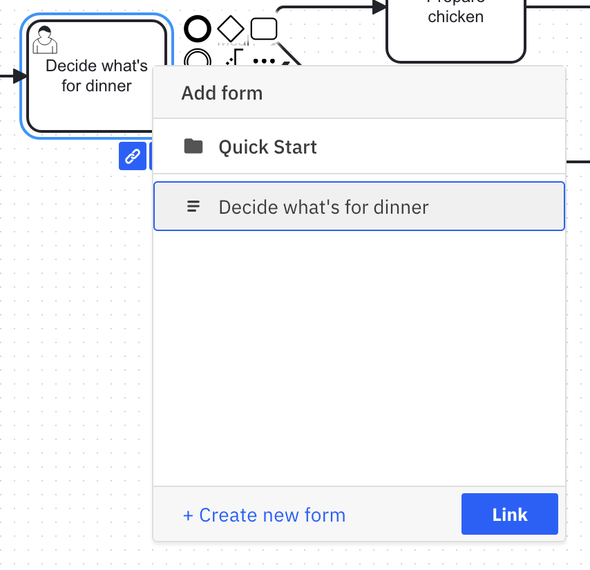
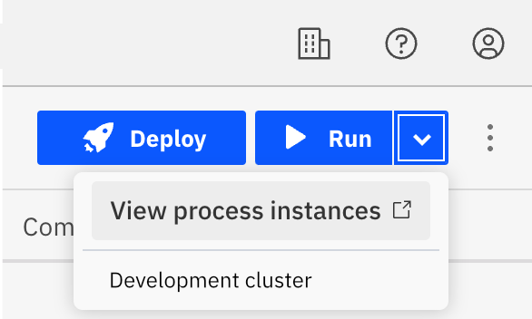
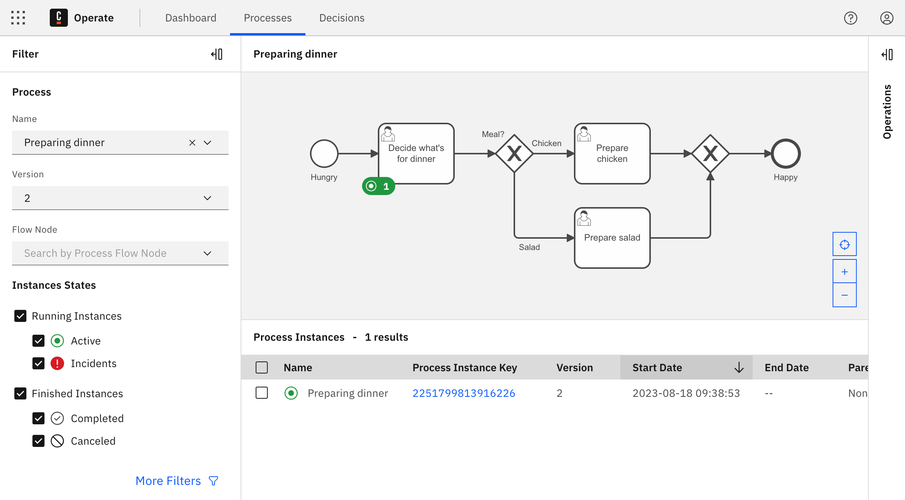
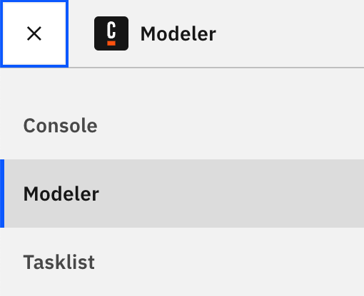
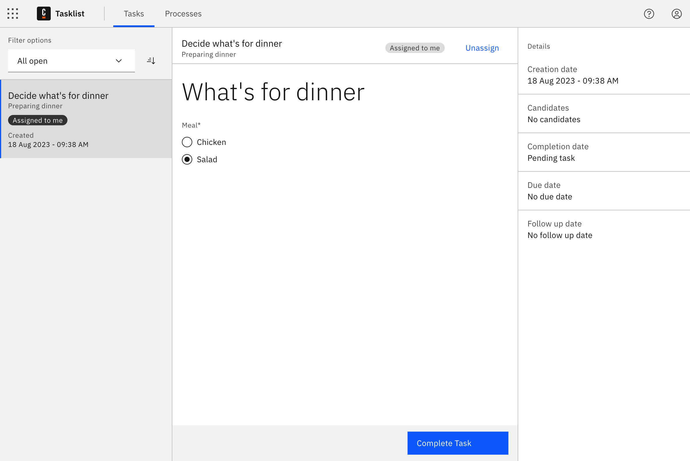

Get started with human task orchestration
Camunda 8 allows you to orchestrate processes with human tasks of any complexity. Utilizing user tasks, you can create and assign tasks to users. Then, users can perform their work and enter the necessary data to drive the business process.
This guide introduces you to the basics of human task orchestration. You will create a simple process to decide on dinner, and drive the process flow according to that decision. This process is entirely executable in the browser.
If you prefer a video-based learning experience or a more complex example, visit this Camunda Academy course.
Take the following five steps to create and run your first process with a human in the loop:
Step 1: Create a new process
In this step, you will design a process that demonstrates how to route the process flow based on a user decision. In this example, you will create a process to decide what is for dinner.
Create a new file
- Every file in Web Modeler requires a project. Within Modeler, click New project.
- Name your project and select Create new > BPMN Diagram.
- Give your file a descriptive name. In this case, name it
Decide for Dinner. - Make sure to name the process itself as well. Click the empty canvas, and specify the process name and technical ID in the properties panel. This specifies how the process will appear in other tools of Camunda 8.
Design the process
To run this guide, make sure to be in Implement mode to specify the technical details of the process.
![Active implement mode tab]()
-
A start event is automatically added to the canvas. Click it to display configuration and append options.
-
Click the rectangular Append Task icon to append a task.
-
Enter a descriptive name for the task, such as
Decide what's for dinner. -
Change the task type by clicking the wrench icon. Select User Task.
-
Select the user task and click on the diamond-shaped icon to append an exclusive gateway. The gateway allows to route the process flow differently, depending on conditions.
-
Select the gateway and append a task by clicking the task icon. Repeat it to create a second process flow. Name the tasks based on what the user decides to eat: in this case, we've named ours
Prepare chickenandPrepare salad. -
To route the user to the right task, add expressions to the sequence flows. Sequence flows are represented by arrows connecting the gateway to the tasks. To add an expression, click on a sequence flow to view the properties panel, and open the Condition section.
-
Verify the sequence flows have the following expressions:
meal = "Salad"on one side, andmeal = "Chicken"on the other. You will define the variablemeallater when designing a form for the user task.
-
Connect the split process flows again. Append another exclusive gateway to one of the tasks. Select the other task and drag the arrow-shaped sequence flow tool to connect it to the gateway.
-
Select the gateway and add an end event to your process, denoted by the circle with the thick outline.
New to BPMN or want to learn more? Visit our BPMN cheat sheet for an overview of all BPMN symbols. Variables are part of a process instance and represent the data of the instance. To learn more about these values, variable scope, and input/output mappings, visit our documentation on variables.
Step 2: Design a form
You have now designed the process. To allow the user to make the decision, you will now design a form. Forms can be added to user tasks and start events to capture user input, and the user input can be used to route the process flow, to make calls to APIs, or to orchestrate your services.
- Select the user task you created in Step 1.
- Click the blue link icon in the lower right corner. A menu expands that allows you to create a new form.

- Click Create new form. A form will be created and opened in the form editor. The form is automatically named.
Don't worry about saving your process diagram. Modeler automatically saves every change you make.
-
Click and drag the Text component to the empty form.

-
Open the General section in the properties panel and enter a text, such as
What's for dinner?. -
Click and drag the Radio component to the form to create a radio group. Give it a descriptive name within the properties panel.
-
Additionally, set a key which maps to a process variable. The value of the component will be stored in this variable, and it can be read by the process that uses this form. As already defined by the conditions in the process earlier, use the variable
meal. -
Scroll down to the Static options section of the properties panel to add radio options. Since there are two options for the dinner, add an extra value by clicking on the plus sign. Enter the value
Chickenwith the same label asChickenand enter the valueSaladwith the label asSaladin the other value.

Step 3: Link the form to your process
Once the form is designed, you must link it to your process.
-
Click on the project name in the navigation history in the top bar to navigate back, and open the process you created in Step 1.
-
Select the user task. Click the blue form link icon to open the form menu.
-
Select the form you just created, and click link to confirm.

-
You can check if you linked the right form by clicking the form linking icon again. A preview of the form will appear.
Forms linked in the user task are deployed together with the process. If you make changes to a form, you have to deploy the referencing process again to make the changes appear.
Step 4: Run your process
Your process is now ready to run. Given its human-centric nature, it is well suited to be run in Tasklist. In order to make it accessible from Tasklist, the process must be deployed first.
Human-centric processes involving user tasks seamlessly unfold within Tasklist, offering a cost-effective orchestration solution for human work with forms. However, the versatility of these processes extends beyond Tasklist, encompassing various alternative methods and applications. For instance, users can be redirected to external applications to fulfill tasks, bespoke task applications can be developed for any domain, or interactions with the physical world can be captured through event signals from sensors and IoT devices.
Deploy and test run
- Click Deploy to deploy the process to your cluster.
note
If you have not yet created a cluster, clicking Deploy will take you to Console to create a cluster first. Continue with this guide after cluster creation.
- After you deploy your process, it can be executed on the cluster. There are multiple ways to run a process. This time, click Run in Modeler for a test run.
Other options to run a process are to start it via Tasklist, test it in the Play mode, or call it via the API or an inbound trigger. Read more about run options.
Check successful start in Operate
-
The process start will be confirmed via a notification message on the screen. Click the chevron icon next to Run to open more options. Click View process instances to see the running process in Operate.

-
In Operate, you will see a visualization of the running process instance. Notice that a green token is waiting at the user task. This means that a task is waiting to be worked on in Tasklist.

In production, Operate is used to monitor both long-running and straight-through, high-throughput processes. In development environments, use Operate to confirm if the process flow works as expected. For faster in-place validation during development, use the Play mode.
Step 5: Complete a user task
When the process instance arrives at the user task, a new user task instance is created at Zeebe. The process instance stops at this point and waits until the user task is completed. Applications like Tasklist can be used by humans to complete these tasks. In this last step, you will open Tasklist to run the user task you created.
While it may originally seem like the goal of automating a process is to remove humans entirely, efficiently allocating work through user tasks can be even more beneficial. Within this example, we've included a form to demonstrate the completion of a user task.
Using the Zeebe or Tasklist API, many other ways to complete a user task are possible, such as redirecting to another application to complete the task, or even listening to IoT devices to capture human interaction with the real world via job workers.
-
Click the navigation menu icon next to the Camunda logo in the top bar to open the global navigation.
-
Click Tasklist to open the Tasklist application.

-
On the left, you will notice a list of tasks. There should be one open task
Decide what's for dinner. Click this task to open it in the detail view. -
In the detail view, the form you created in Step 2 appears. It is read only since this task is currently unassigned. You have to claim the task to work on it. Next to Assignee, click Assign to me to claim the task.
-
Select one of the radio options.
-
Click Complete Task to submit the form.

-
To verify your task completion, you can filter by Completed tasks in the left task list panel.
You can now navigate back to Operate and notice the process instance has continued as the token has moved forward to the selected option.
The token moves through the exclusive gateway (also called the XOR gateway), and is used to model the decision in the process. When the execution arrives at this gateway, all outgoing sequence flows are evaluated in the order in which they have been defined. The sequence flow which condition evaluates to ‘true’ is selected for continuing the process.
In this case, the token will move through the gateway and (according to the conditional expressions we outlined earlier) to the selected dinner based on the Decide what's for dinner user task we completed. If we select Chicken, the token moves forward to Prepare chicken. If we select Salad, the token moves forward to Prepare salad.
Wrap up
At this point, you've successfully crafted a human-centered process that routes the process flow based on a decision made by a user.
A core value of Camunda 8 lies in the combination of automation and human interaction. Continue with the following resources to learn about intelligent task assignments, flexible forms to capture data and decisions, operational insights to refine task efficiency, and pathways to publish your processes to users via Tasklist or even publicly.
Don't want to build the process yourself? Click this button to create it from a template in Camunda 8 SaaS, or sign up first.
Additional resources and next steps
- Watch the video-based Human Task Orchestration Course.
- Learn how to use BPMN user tasks to route tasks to the right users.
- Learn how to build more complex forms using the form editor.
- Learn how to write powerful expressions and utilize variables to route complex process flows.
- Get an introduction to Operate.
- Learn how to set up Tasklist for efficient task management.
- Explore start forms and attach the form directly to the start event.